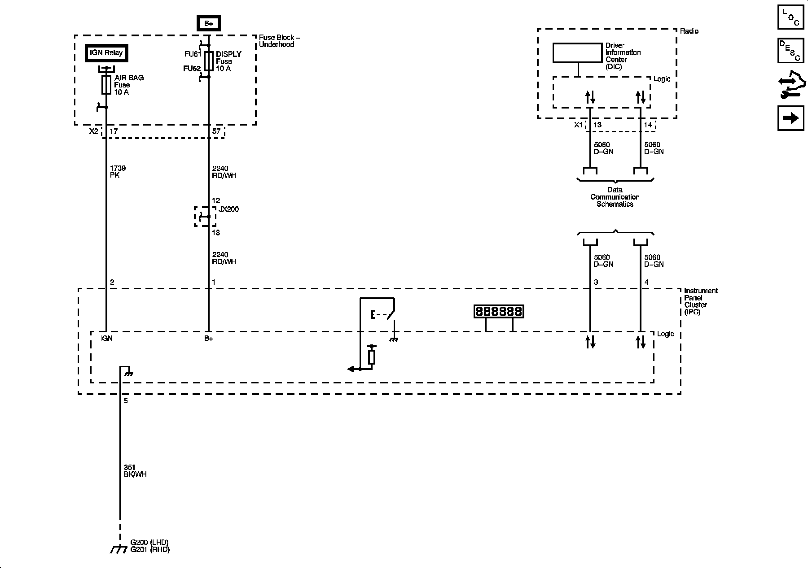
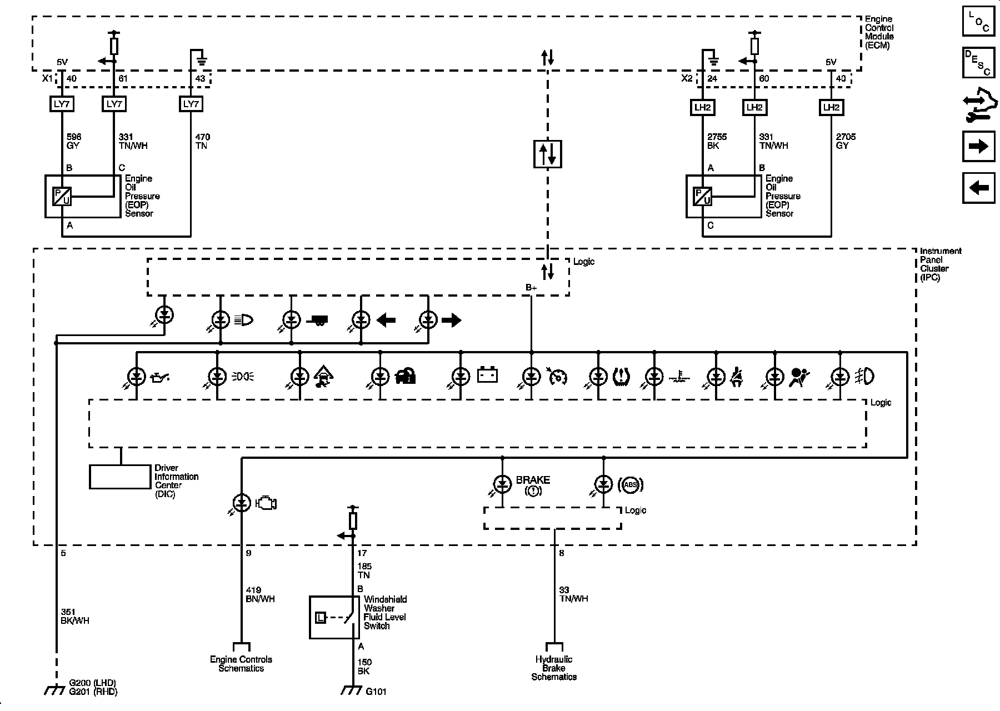
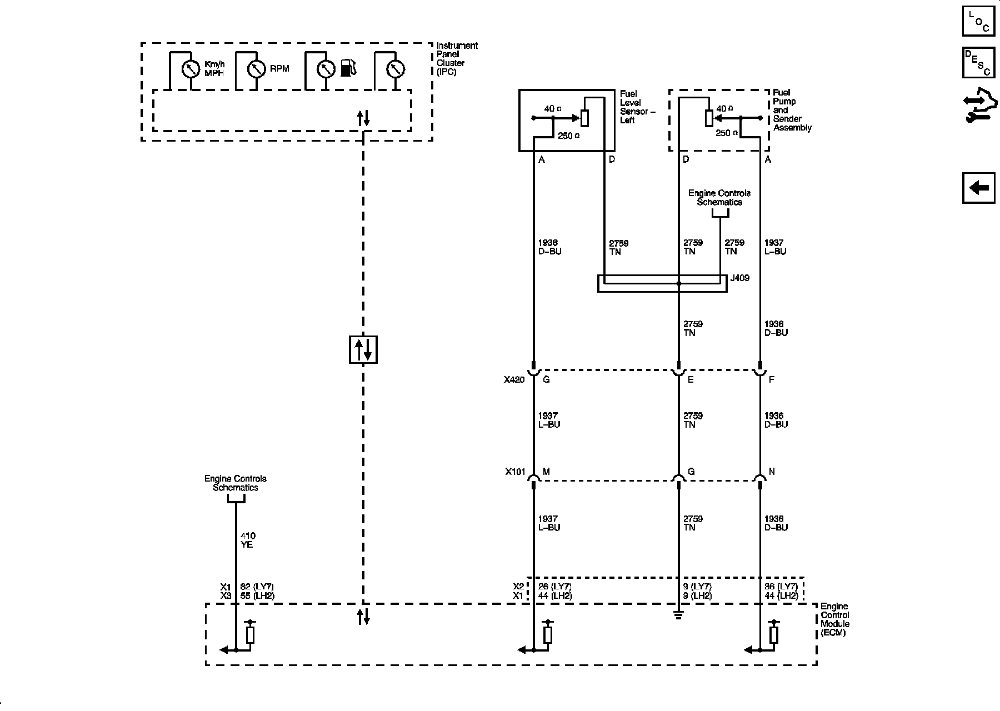

Operation CHARM
: Car repair manuals for everyone.
Home
>>
Cadillac
>>
2008
>>
SRX AWD V8-4.6L
>>
Repair and Diagnosis
>>
Diagrams
>>
Electrical Diagrams
>>
Instrument Panel, Gauges and Warning Indicators
>>
System Diagram
>>
Instrument Cluster Schematics
Instrument Cluster Schematics
Instrument Cluster Schematics
Power, Ground, Serial Data, and
Odometer

Indicators

Gages
